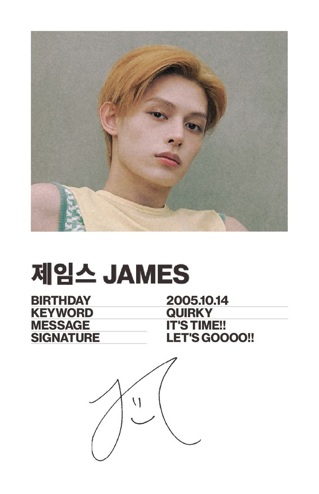
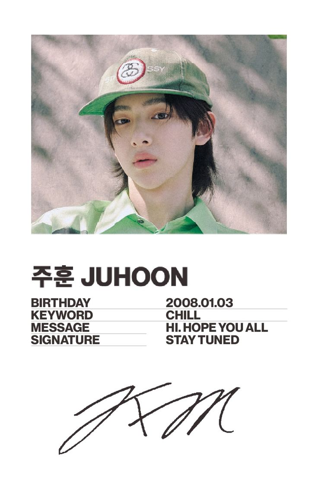
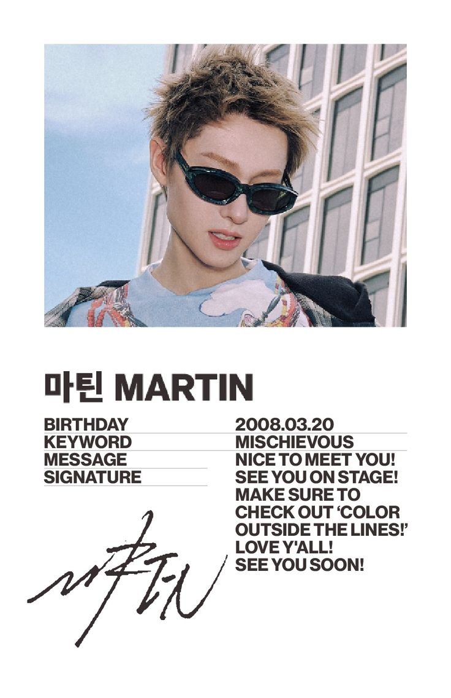
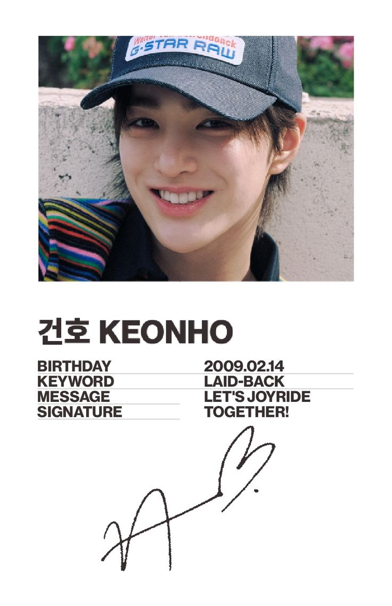
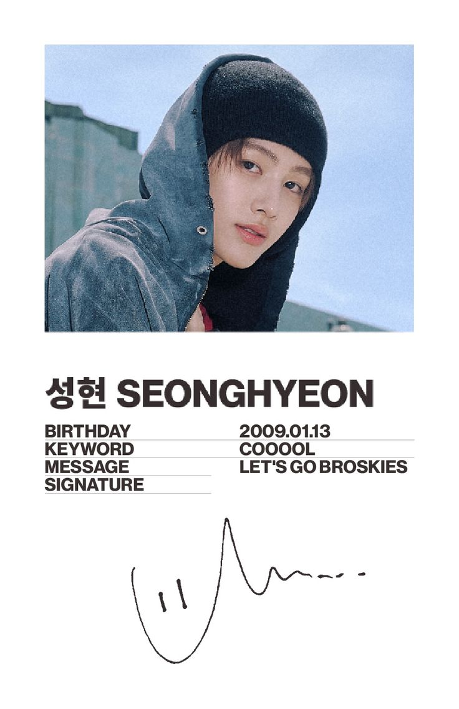

Contents

Popular Female Group
CORTIS: K-Pop’s Newest Rising Star
The group name “CORTIS” comes from the phrase “COLOR OUTSIDE THE LINES” — it is meant to represent breaking free from norms and embracing creative freedom.
Debut date: August 18, 2025 — their first digital single was "What You Want".
CORTIS is a 5-member South Korean boy group, under BigHit Music (the same label behind BTS).





What makes CORTIS stand out among new K-pop groups?
- The “self-producing / creative crew” branding — they don’t just perform: they take part in writing, choreography, concept creation. That tends to resonate with fans who appreciate artistry and authenticity.
- Their debut is under a major label (BigHit), which gives them strong production, promotion, and visibility — helpful for gaining global attention quickly.
- Their sound and concept aim to push boundaries, appealing to listeners who want something different from “typical idol pop.